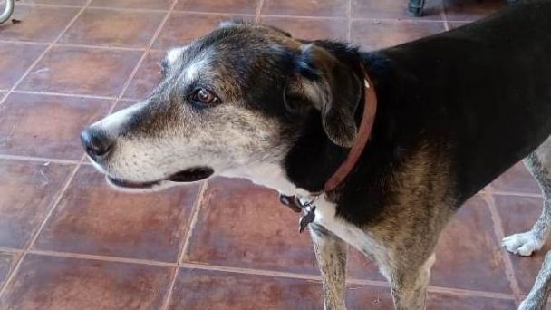
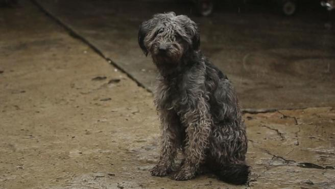
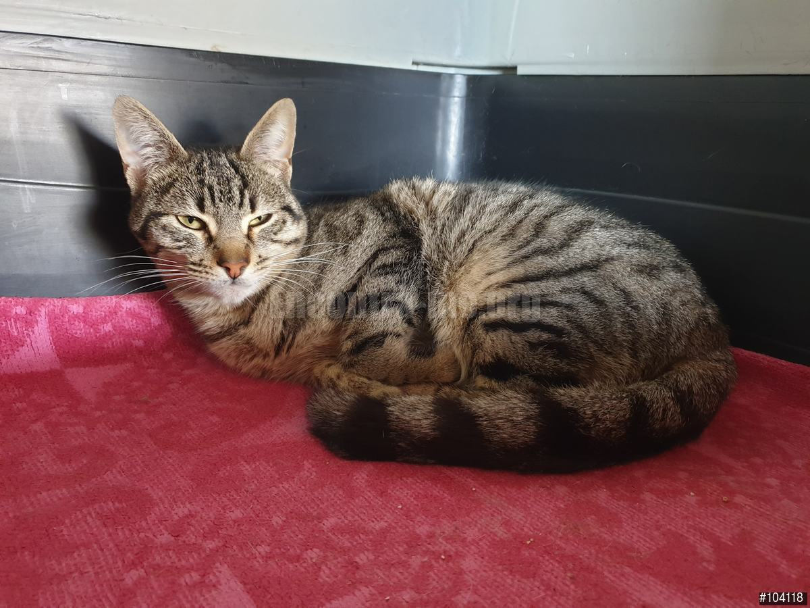
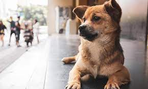

Viejito perdido con collar
Perdido: 12 de octubre
Localidad: Neuquén
Contacto: 299123456
Email: unemail@hotmail.com
Descripcion: Aparecio en la puerta de casa y lo tuvimos que entrar por el frio, en su plaquita dice "Rocco". Es un perro viejito que parece tener dueño.

Busca a su familia
Perdido: 1 de noviembre
Localidad: Plottier
Contacto: 299123456
Email: unemail@hotmail.com
Descripcion: Esta siempre en la esquina de la plaza solito, hoy me siguio hasta casa y no se movio de la puerta. No lo puedo entrar porque mis perros son muy celosos, alguien lo quiere adoptar?

Perrito asustado
Perdido: 22 de Julio
Localidad: Cipolletti
Contacto: 299123456
Email: unemail@hotmail.com
Descripcion: Aparecio este perrito en el barrio y se acerca a las personas llorando como buscando a sus dueños. Se encuentra entre calles San Martin y Roca en Cipolletti

Gatito atigrado
Perdido: 12 de octubre
Localidad: Cinco Saltos
Contacto: 299123456
Email: unemail@hotmail.com
Descripcion: "Adios humano mi planeta me necesita" Fueron las ultimas palabras de Chimuela antes de ser vista por ultima vez. Ah...es negra y tiene guantes blancos y una cruz en el pecho

Perrito busca familia
Perdido: 12 de octubre
Localidad: Cinco Saltos
Contacto: 299123456
Email: unemail@hotmail.com
Descripcion: "Adios humano mi planeta me necesita" Fueron las ultimas palabras de Chimuela antes de ser vista por ultima vez. Ah...es negra y tiene guantes blancos y una cruz en el pecho